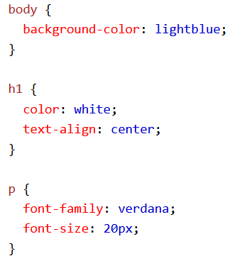
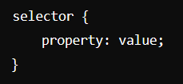
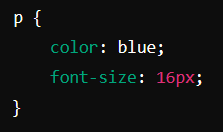
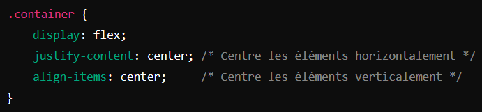
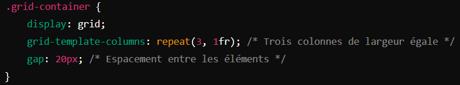
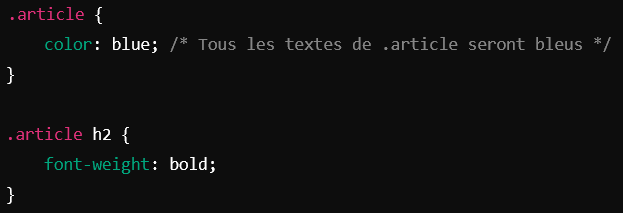
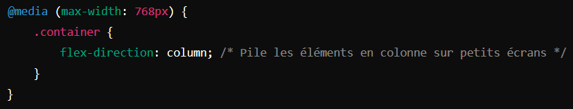
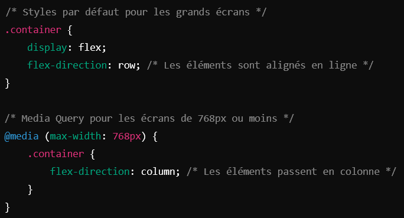
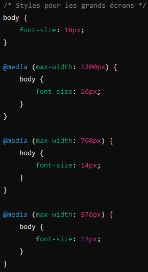

Qu'est-ce que le CSS?
CSS est l'acronyme de Cascading Style Sheets il décrit comment les éléments HTML doivent être affichés à l'écran, papier, ou dans d'autres médias il économise beaucoup de travail. Il peut contrôler la configuration de plusieurs pages Web toutes en une seule fois
Pourquoi utiliser le CSS?
CSS est utilisé pour définir des styles pour vos pages web, y compris la conception, la mise en page et les variations d'affichage pour différents dispositifs et tailles d'écran.
Le CSS a résolu un gros problème
HTML n'était JAMAIS destiné à contenir des balises pour formater une page web Le langage HTML était créé pour décrire le contenu d'une page web Lorsque des balises comme ‹font› (L'élément HTML ‹font› définit la taille, la couleur et la police de son contenu.) et des attributs de couleur ont été ajoutés au HTML 3.2 spécification, il a déclenché un cauchemar pour les développeurs web. Développement de grands sites web, où des polices et des informations de couleur ont été ajoutées à chacun page, est devenue un processus long et coûteux. Pour résoudre ce problème, le World Wide Web Consortium (W3C) a créé CSS. Le CSS utilise une syntaxe de sélecteurs et de déclarations pour cibler des éléments HTML et définir leur style.
Exemple de syntaxe CSS
Sélecteur : Il identifie l'élément HTML à styliser (comme h1, p, .classe, #id, etc.).
Propriété : Elle spécifie ce qui va être modifié (par exemple, color, font-size, margin).
Valeur : La valeur est le style appliqué à la propriété (par exemple, red pour color, 16px pour font-size).
Exemple pour changer la couleur du texte des paragraphes
Les propriétés de base du CSS
Il existe des centaines de propriétés CSS, mais voici quelques-unes des plus courantes
Couleurs et arrière-plan :
color : Modifie la couleur du texte, background-color : Définit la couleur de fond, background-image : Applique une image d’arrière-plan.
Mise en forme du texte :
font-family : Définit la police de caractère, font-size : Taille de la police, text-align : Alignement du texte (par exemple, center, left, right).
Mise en page et dimensionnement :
margin : Espace autour d’un élément, padding : Espace intérieur d’un élément, width et height : Largeur et hauteur d’un élément.
Affichage et positionnement :
display : Contrôle le modèle de boîte d’un élément (par exemple, block, inline, flex).
position : Détermine le type de positionnement (static, relative, absolute, fixed, sticky).
float : Permet de faire flotter les éléments à gauche ou à droite (moins utilisé aujourd’hui, remplacé souvent par flex et grid).
Les différents types de sélecteurs CSS
Les sélecteurs permettent de cibler précisément des éléments spécifiques dans le HTML
Sélecteurs de type : Ciblent les éléments par leur nom (p, h1, div, etc.).
Sélecteurs de classe : Ciblent les éléments portant une classe (par exemple, .classe pour ‹div class="classe"›).
Sélecteurs d'identifiant : Ciblent les éléments portant un ID (par exemple, #id pour ‹div id="id"›).
Sélecteurs d'attributs : Ciblent des éléments ayant un attribut spécifique (input[type="text"]).
Sélecteurs de pseudo-classes et pseudo-éléments : Ciblent des états spéciaux ou des parties spécifiques d’un élément (:hover, etc.).
Les modèles de mise en page avancés : Flexbox et Grid
Flexbox : Un modèle de mise en page unidimensionnel qui permis de placer des éléments en ligne ou en colonne et de les aligneurs et de flexibilité avec. Idéal pour des mises en page simples comme des barres de navigation, des galeries, etc.
CSS Grid : Un modèle de mise en page bidimensionnel qui permis de créer des grilons complexes. Il est pour adapté des mises en page plus élaborées.
La cascade et l'héritage en CSS
Le CSS (Cascading Style Sheets) est un langage en cascade, ce qui signifie que les styles sont appliqués en fonction de plusieurs niveaux de priorité. Cette cascade détermine comment les styles sont calculés quand il y a plusieurs règles qui pourraient s’appliquer à un même élément.
Cascad
La cascade fonctionne selon un ordre de priorité spécifique :
Styles par défaut du navigateur : Le navigateur applique des styles de base à chaque page.
Éléoptable Styles : Ceux-ci sont ajoutés par l’utilisateur (certains navigateurs permettent de définir des styles spécifiques).
Styles externes : Ce sont les règles CSS définies dans une feuille de style externe, généralement via une balise ‹link› dans le HTML.
Styles en ligne : Ils sont ajoutés directement dans l’élément HTML, avec l’attribut style="" (par exemple, ‹p style="color: blue;"›).
- importantes : Une règle avec !important a la priorité absolue, même sur les autres niveaux.
Héritage
L'héritage est la manière dont certaines propriétés CSS se transmettent automatiquement des éléments parents à leurs éléments enfants. Certaines propriétés, comme color (couleur du texte) et font-family (police de caractères), se propagent automatiquement, tandis que d’autres, comme margin ou padding, ne sont pas héritées.
Tous les textes d’éléments enfants de .article auront la couleur bleue, car color est une propriété héritée.
La propriété font-weight: bold; de h2 ne sera pas héritée par les autres éléments enfants de .article car elle ne se propage pas automatiquement.
Utilisation pratique de la cascade et de l'héritage
Hiérarchise les styles en plaçant les règles les plus générales en premier et en ajoutant des sélecteurs plus spécifiques si nécessaire.
Limiteur l'utilisation de !important, car il rend le code plus difficile à lire et à maintenir.
Utiliser des classes pour cibler des éléments précis, et tirer parti de l'héritage pour appliquer des styles globaux (comme des polices ou des couleurs de texte) à un ensemble d’éléments.
La cascade et l’héritage permettent de structurer et d’organiser efficacement les styles d’une page tout en donnant un contrôle détaillé sur l’apparence des éléments HTML.
Outils avancés : Responsivité et Media Queries
Les médias requêtes pour la création de la page adaptatives (récepteurs), changeant le style en fonction de la taille de l’écran.
La Responsabilités permet aux sites web de s’adapter à différentes tailles d’écran (comme les mobiles, tablettes, et ordinateurs de bureau). En CSS, cela se fait principalement à l'aide des Demandes de renseignements sur les médias, qui permettent d'appliquer des styles spécifiques en fonction des caractéristiques de l'appareil ou de la fenêtre d'affichage, telles que la largeur de l’écran.
Qu’est-ce qu’une Media Query ?
Une Demande d'information des médias est une condition qui vérifie certains critères, comme la taille d’écran. Si la condition est remplie, les styles à l'intérieur de la Media Query s'appliquent. Elles sont particulièrement utiles pour créer des mises en page adaptatives, où les éléments s’ajustent selon la taille d’écran.
Exemple de Media Query de base
un exemple de Demande d'information des médias qui modifie la disposition d’un site sur les petits écrans (comme les smartphones) :
Dans cet exemple :
Les styles pour les définis .container s’appliquent par défaut (les éléments sont alignés en ligne).
Quand l’écran est de 768 pixels de large ou moins, la Media Query change l’alignement en colonne.
Utiliser des Media Queries pour différents points de rupture
Les points de rupture sont des largeurs d’écran spécifiques où la mise en page change pour s’adapter aux tailles d'écran standard. Par exemple :
@media (max-width: 1200px) pour les grands écrans (comme les ordinateurs de bureau).
@media (max-width: 992px) pour les tablettes.
@media (max-width: 768px) pour les mobiles en mode paysage.
@media (max-width: 576px) pour les petits appareils mobiles.
Ici, la taille de la police diminue progressivement pour s’adapter à des écrans plus petits, améliorant ainsi la lisibilité sur les appareils mobiles.
Conseils pour utiliser les Media Queries
Mobile d'abord : Appliquez d'abord les styles pour les petits écrans, puis ajoutez des Media Queries pour les écrans plus grands.
Témoins d'essais fréquents : Testez les Media Queries sur différents appareils ou en redimensionnant votre navigateur pour vous assurer que le site est agréable à utiliser.
Utilisation de valeurs apparentées : Utilisez des unités de taille relative comme %, em, ou rem pour que le contenu s’ajuste plus facilement.
En résumé
Les Media Queries sont des outils puissants pour faire en sorte que votre site soit responsive, c'est-à-dire qu'il s'adapte de manière fluide à toutes les tailles d’écran. Grâce aux Media Queries, vous pouvez contrôler chaque aspect du design et offrir aux utilisateurs une expérience optimale, peu importe l’appareil.